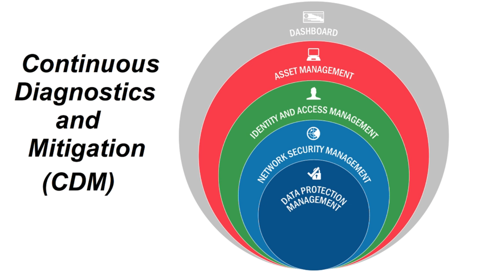
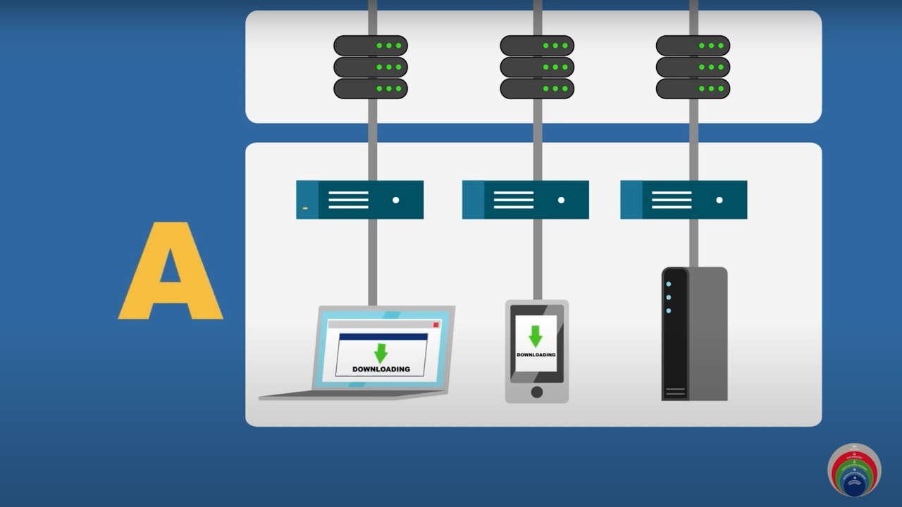
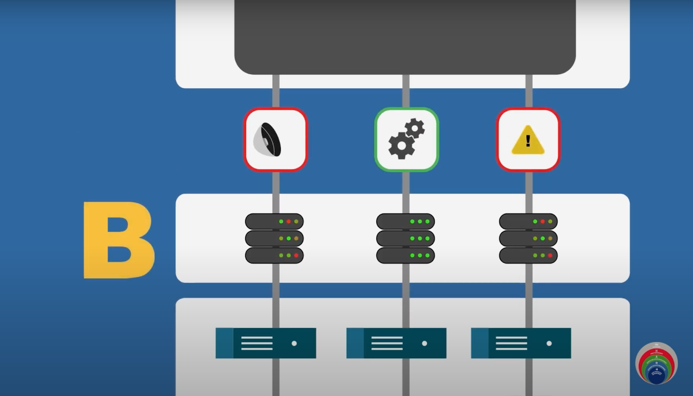
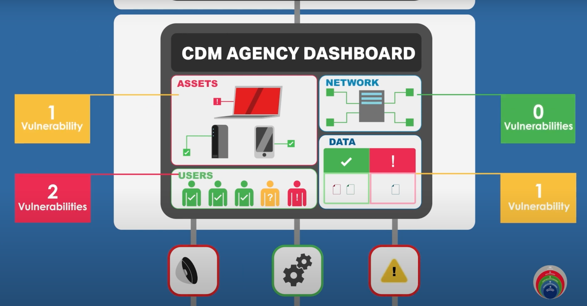
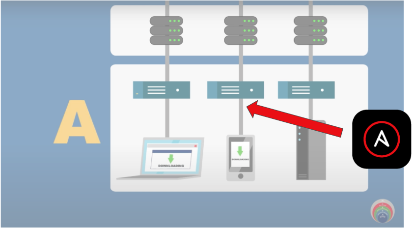
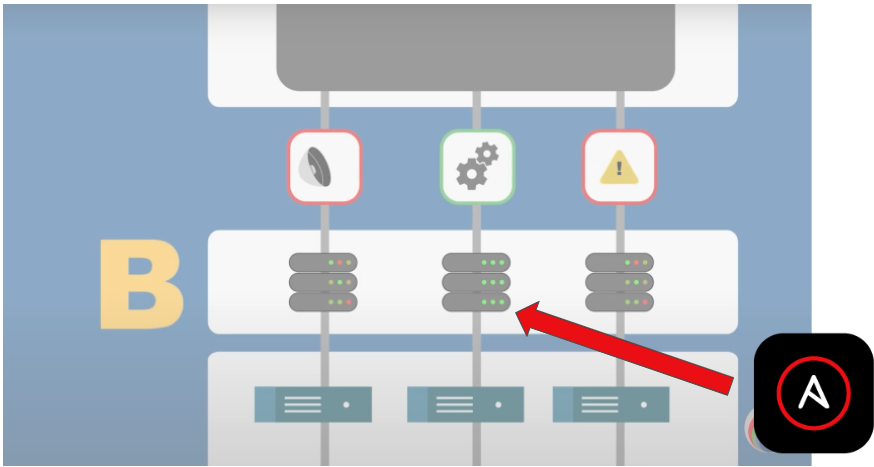
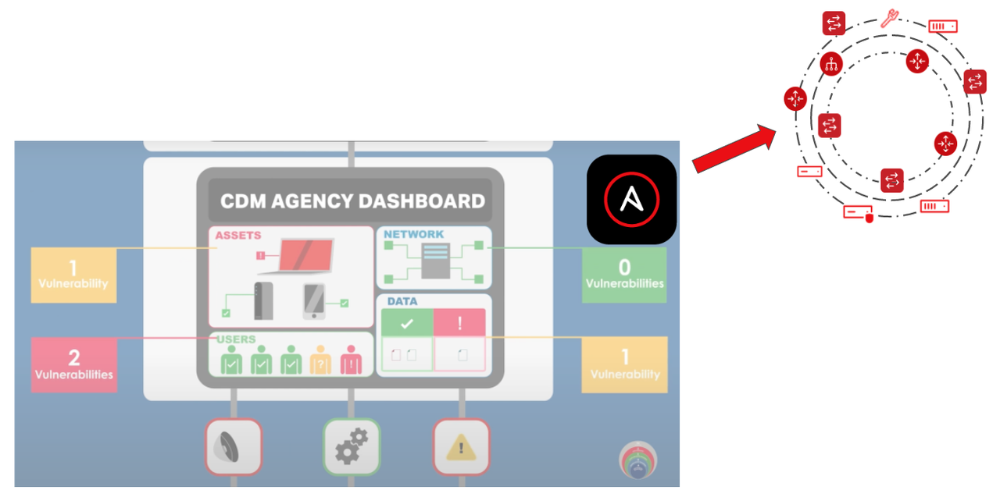

Continuous Detection and Mitigation (CDM)
Continuous Detection and Mitigation (CDM)
Per NASCIO, the top priority for state CIOs is cybersecurity and risk management. A key focus for this initiative is to leverage the Continuous Diagnostics and Mitigation (CDM) framework provided by the Cybersecurity and Infrastructure Security Agency (CISA). In this blog post we will explore a high level view of the CDM framework, review Ansible's role in security automation and finally understand how Ansible can help agencies with Day 0 through Day 2 tasks while working with the CDM framework.
What is CDM?
Today more than ever, cyber threats mean that securing and defending our networks are of utmost importance. A recent report published by the National League of Cities revealed that an astonishing 44% of local governments report they experience a cyberattack daily or even hourly. So it is not surprising to see that cybersecurity and risk management is the number one priority for our state CIOs. With that background, let's understand the CDM program.

Source: https://www.cisa.gov/cdm-training
The CDM framework is defined by CISA. CDM provides capabilities and tools that help identify cybersecurity risks on an ongoing basis, prioritize these risks and enable cybersecurity personnel to mitigate them based on priority.
At its core it provides tools and dashboards that enable cybersecurity professionals to understand what is on the network, who is on the network, and what's happening on the network. CISA's CDM is leading that effort to reduce cyber risk by delivering tools to federal/state agencies to strengthen their ability to monitor and manage the threat of cyber vulnerabilities.
The CDM model
The CDM framework provides an opinionated four layer architecture. The first layer, layer A, consists of sensors and scanners that are deployed in the network. These scanners and sensors continuously collect data that match against fingerprints and send it up to the second layer, layer B, or the integration layer.

The second layer, Layer B, normalizes the data sent in by the Layer A sensors and scanners. This serves as the correlation point.

After normalization, the data is fed up into the C&D layers that consist of agency level and federal level dashboards.

Source: CISA's YouTube channel
Agency security personnel then reviews the dashboards and makes decisions on prioritizing and mitigating the alerts.
Ansible for security automation
Ansible has been a leader in the infrastructure automation domain for years now. The value that Ansible brings to the infrastructure domain easily translates into the security automation space, including:
- Increases speed: Reduce the number of manual steps and GUI-clicks. Enables the integration between numerous security solutions at the agency.
- Reduces human errors: Minimizes risk with automated workflows and human operator errors in time-sensitive, stressful situations.
- Enforces consistency: Enables auditable and verifiable security processes by using a single framework across multiple security tools.
The scale and complexity of the modern infrastructure that needs to be protected in combination with the challenge of speed brought by modern cyberattacks using automation themselves require technology to support human operators. The challenges for cybersecurity teams is managing multiple security tools within the CDM architecture,integrating between the tools and using the tool data to effectively manage changes to their end-points.
Ansible for the CDM use case
CDM has an opinionated architecture and an approved product list of over 240,000 products that agencies can use. You can imagine the integration needs for CDM implementations across agencies for the different products involved. Red Hat Ansible Automation Platform is one of the approved products sanctioned for the CDM use case. So where does Ansible fit in this four layered CDM model? Let's take a look at layer A that consists of sensor and scanners:

The two use cases that are immediately apparent for this layer are:
- Log enrichment
- Fingerprint/signature updates
Each time the security operations center (SOC) needs to triage an incident, they might need increased verbosity of logs from the sensors or from the endpoint themselves. Typically this eliminates potential false positives. Doing this manually means SOC personnel have to log in and make these configuration changes. Doing this at scale across an agency can be manually intensive and prone to human error. And of course after investigation these log levels need to be reset to standard! Using Ansible to automatically turn on log enrichment during the investigation and subsequently turn off the verbosity at scale is an effective use case for the CDM layer A sensors and scanners.
Scanners and sensors that make up layer A will need timely updates to fingerprints based on newer attack vectors. Imagine having to manually update these fingerprints across thousands of sensors! Ansible can be a good solution to automate this Day 2 operational task needed for layer A.
What about layer B? If you recall, layer B collates the logs from layer A and normalizes the data along with correlating it.

These devices are servers, which are subject to all the traditional Day 2 operations that automation can help, such as patching, OS upgrades, and software updates.
Finally, the C and D layers serve dashboards that a SOC personnel reviews and acts on.

Having Ansible Playbooks to mitigate known vulnerabilities could be leveraged at this layer with API integration with automation controller . Ansible is a proven multi-vendor automation platform. Agencies could adopt automated mitigation for known vulnerabilities by firing off an automation request to Ansible. Another use case is automating some aspects of triage coordination. For example, if multiple teams are needed to look into a certain alert, Ansible could fire off tickets automatically to the appropriate teams who can then start their triage (and even use Ansible for that triage process).
Summary
In summary, CDM is an opinionated security framework laid out by CISA and adopted by agencies as a way to address cybersecurity and threat response. CDM prescribes an approved list of products, which include Ansible Automation Platform, that agencies can leverage. Ansible Automation Platform can be a valuable platform for automating the different layers of CDM. Benefits include:
-
Sensors and scanners:
- Log enrichment
- Update signatures
-
Integration layer:
- Patching
- Day 2 Operations
-
Mitigation
- Automated mitigation
- Triage coordination